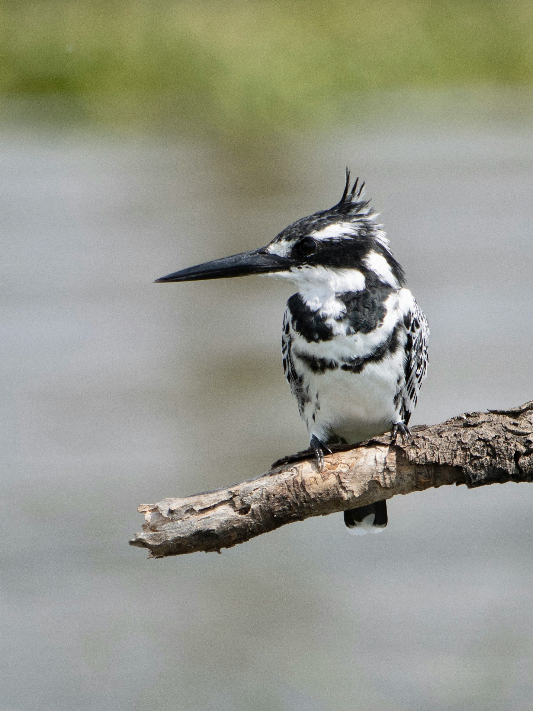

The Pied Kingfisher is a black-and-white kingfisher famous for hovering above water before diving vertically to catch fish. It has a shaggy crest, long pointed bill, and strongly patterned plumage. It is closely associated with rivers, lakes, reservoirs, estuaries, and other open waters and often hunts from exposed perches as well as by hovering.